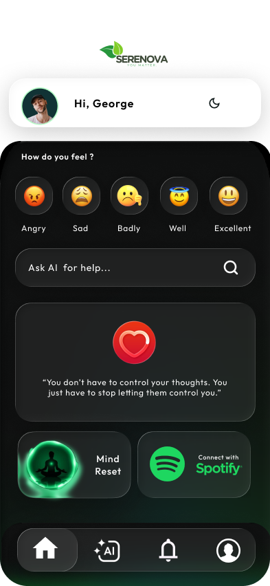
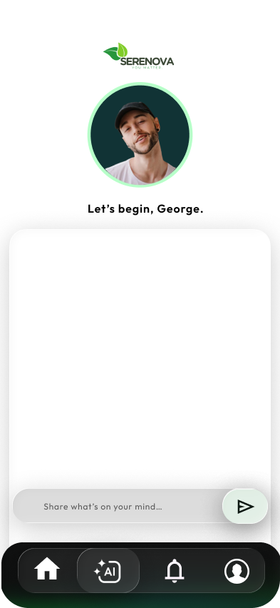
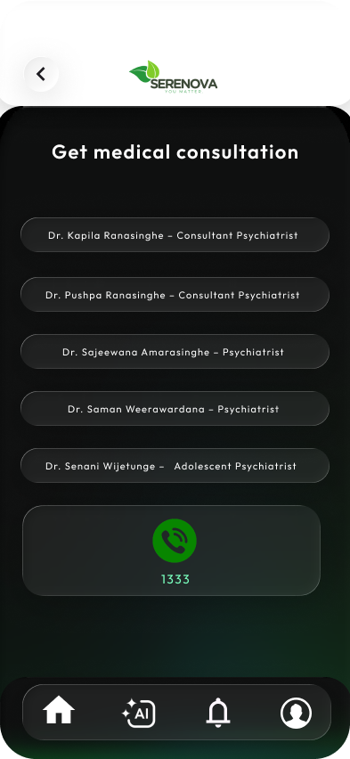
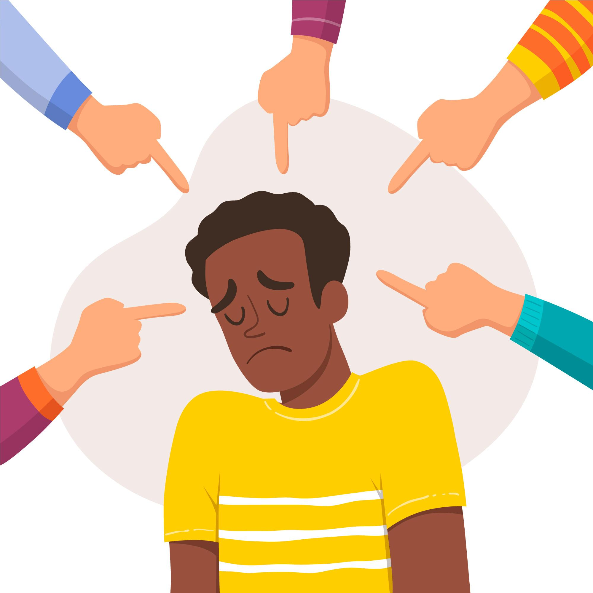
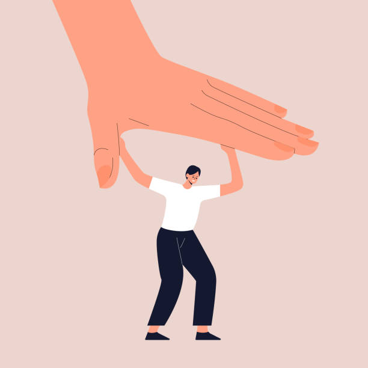

Serenova comes from the words serenity, meaning calm and peace, and nova, meaning new. Together, it represents a new beginning of peace, a fresh start, and a sense of calm after difficult moments.
DownloadWe offer variety of features which will help teenagers ease their mind
Teenagers can talk to an AI assistant, helping reduce stress by expressing their thoughts and feelings. Provides instant guidance, detects emotional patterns over time, always available to help anytime and gives advice based on the user’s mood and behavior
Box breathing is a simple breathing technique where you inhale, hold, exhale, and hold each for the same amount of time, helping to calm the mind and reduce stress. This affects our Parasympethetic nerves which will make us calm
A unique feature of our app allows teenagers to easily book appointments with real-world doctors and professionals. It helps bridge the gap between digital support and real-life care, making it simple to reach out when needed.
An app which offers teenagers a variety of features
to get rid of mental trauma



Teenagers today face a wide range of challenges in modern society, including peer pressure, bullying, and emotional ups and downs. Without the right support, these experiences can sometimes lead to negative or harmful thoughts. This highlights the importance of creating safe spaces, encouraging open conversations, and guiding young people toward trusted support systems and professional help when needed.

Bullying is a common issue among teenagers, whether in school or online. It can affect confidence, cause stress, and make individuals feel isolated. That’s why it’s important to speak up and seek support from trusted people, while promoting a more respectful and supportive environment for everyone.

Peer pressure can sometimes push teenagers toward harmful habits like substance use. The desire to fit in or be accepted may make it difficult to say no, even when they feel uncomfortable. It’s important for teens to make their own choices and seek support from trusted people who respect their boundaries.
Bipolar disorder is a mental health condition that causes noticeable shifts in mood, energy, and activity levels, ranging from high-energy periods to low, difficult ones. These changes can affect daily life, making it important to seek guidance from qualified professionals and support from trusted people.
We tested the prototype with a small group of users to gather feedback. Their insights on usability, design, and overall experience highlighted strengths and areas for improvement, helping us refine the app for a more engaging and effective user experience.
"Serenova is really easy to use and has a calming feel to it. It helps me pause, reflect, and stay more balanced throughout the day, especially during busy or stressful moments.""
“I like how simple and supportive Serenova feels. The features are easy to use, and it helps me stay more aware of how I’m feeling while keeping my day a bit more balanced.”